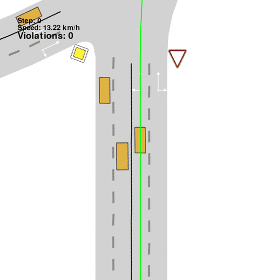
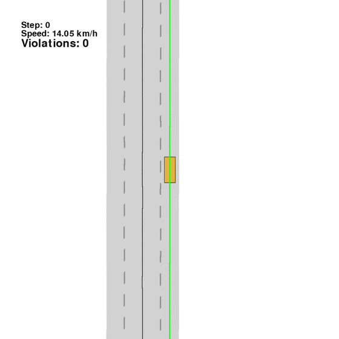
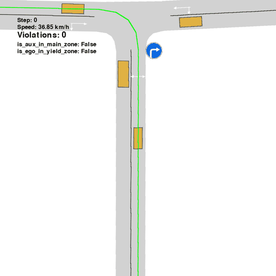
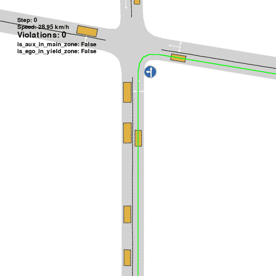
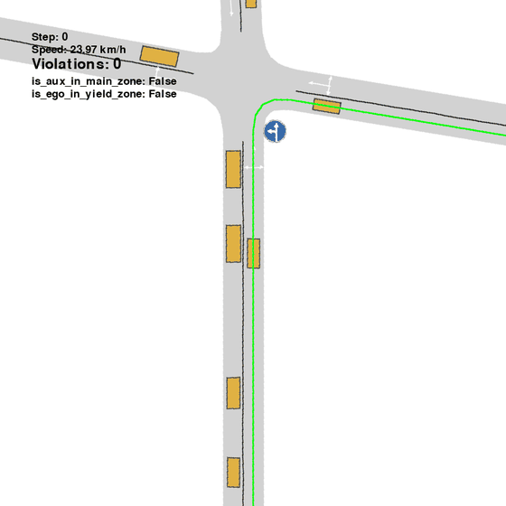
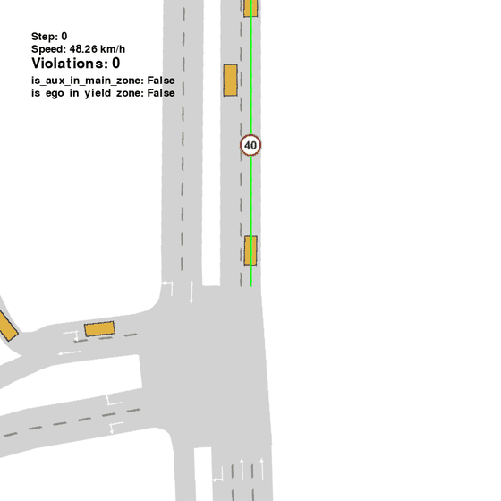

Observed rollout
Driving Score
100.00 Destination reached · no collisionRule-centric closed-loop evaluation
High driving scores can hide
illegal behaviour
We introduce a large-scale closed-loop benchmark that jointly combines a broad traffic-sign taxonomy, automatic rule checkers, and rule-targeted scenarios for evaluating whether autonomous-driving planners obey traffic signs
The metric gap. PlanT 2.0 reaches the destination with no collision and high comfort—yet fails to yield to a pedestrian.
Project video · 02:59
From the metric gap to rule-supervised fine-tuning — a three-minute walkthrough of the benchmark, scenes, and results.
Interactive stop-sign scenario
Take control of the ego vehicle with continuous steering, throttle, and braking. The benchmark checker runs alongside you, entirely in your browser.
High driving scores can hide illegal behaviour
Route progress, comfort, and collision rate describe how a vehicle moves. They do not tell us whether it understood the traffic rule that shaped the scene.
Driving Score
100.00 Destination reached · no collisionTraffic-rule compliance
Failed Pedestrian-yield violation
Breaks the yield rule while completing the route.

Fails to yield to a pedestrian at the crosswalk.

Ignores a mandatory-direction restriction.
High driving metrics do not mean rule compliance
5,800 held-out episodes. SCD—Sign-Compliant Destination—requires both obeying the sign and reaching the intended goal.

PlanT 2.0
PlanT 2.0-FT
PlanT 2.0| Planner | Driving score ↑ | Destination ↑ | Collision ↓ | SCD ↑ |
|---|---|---|---|---|
| IDM | 35.7 | 66.4% | 21.0% | 7.2% |
| PPO | 35.6 | 67.9% | 27.5% | 3.2% |
| CaRL | 39.6 | 73.7% | 21.0% | 2.9% |
| PlanT 2.0 | 28.6 | 56.1% | 43.3% | 5.9% |
| PlanT 2.0-FT rule-supervised baseline | 74.2 | 74.8% | 12.0% | 72.3% |
Conventional metrics are episode-weighted; SCD is macro-averaged over scenario types.
Use the benchmark
@misc{trafficsignbench2026,
title = {TrafficSignBench: Evaluating Traffic Rule Compliance
in Autonomous Driving},
year = {2026},
publisher = {GitHub},
url = {https://github.com/emb-ai/traffic-sign-bench}
}